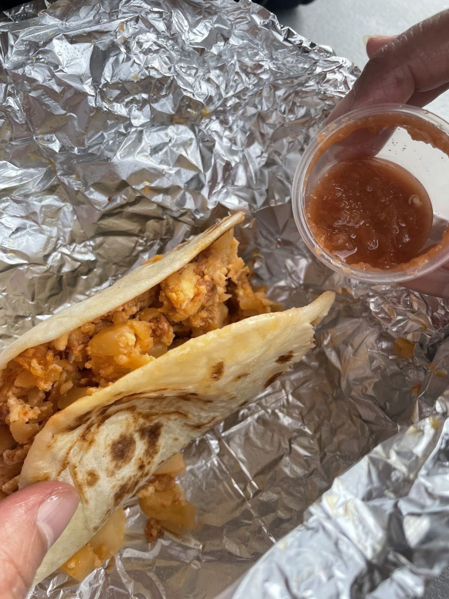

4.6★ reviews
“It's about that time of year for tamales. My husband and I were on the hunt for delicious Tamales for Christmas, and this place did not disappoint. The tamales are flavorful and moist. The workers were so kind, even though we ordered 3 dozen tamales with little notice. The kind…”
“I love the smell of tamales in the morning. They smell like victory. Mr. Chris Gonzales puts the “P” in professionalism. I found these little gem earlier this year. I have been trying to go back in moderation. The tamales are delicious and well-made the green salsa that you must…”
“So far, good tasting tamales in the area. You rarely come across good tamales, this place is one of em. There's no dinning area or seating, it's take out only, FYI. tamales are a good size. Barbacoa tasted reheated, not fresh.”
“Best $2 Breakfast tacos we have had. Hands down. To top it off Mr Gonzalez is one of the nicest fellas you are gonna meet. Picture is of the Chorizo, Potatoe, & egg taco.”
“We stopped at this tamales stand leaving Randolph AFB. Hubby got a big ole breakfast burrito that did not disappoint and my aunt and I got some chorizo breakfast tacos which were honestly really good portions for the price (3x 5.75). Chris was nice enough to throw in some…”
“The name is misleading because it's so much more than tamales. I haven't even tried the breakfast tacos yet because I keep getting stuck on the five ingredient breakfast burritos. One is enough to fill me up. I highly suggest calling before you go here because it's a small scale…”
“This place is amazing. Tamales are fresh and 😋 delicious. Mr. Chris (the owner) is very friendly and polite. He is very proud of his job. He makes you feel welcome every time. He always gas smiles, and he wants to make sure the customers are happy. We enjoy eating there. We…”
“Best Menudo hands down. Perfectly seasoned, perfect ratio of meat and pozole, and just delicious every time. Owner is very friendly. Try it, you won’t be disappointed!!”